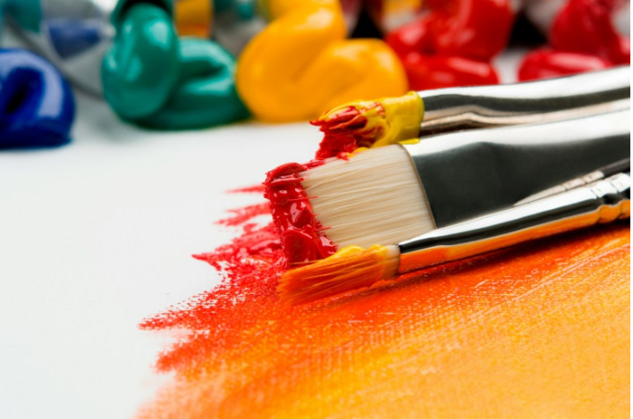
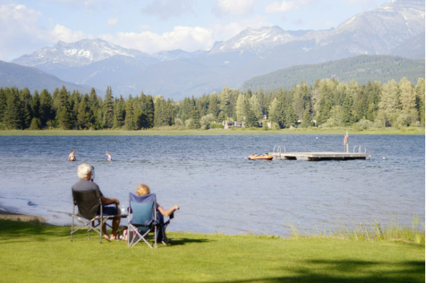

을유 시리즈
-
#5. “새들은 다 어디로 갔을까?
『과학혁명의 구조』가 학계에 큰 영향을 주었다면, 같은 해에 출간된 또 다른 책은 전 세계에 더욱 막대한 영향력을 떨치고 대중에게 비교적 생소한 과학적 탐구 주제였던 환경주의를 소개했다. 공정책을 변화시키고 사람들의 전반적인 인식 수준도 높인 이 책이 수백만 명의 죽음에 간접적인 책임이 있다고 주장하는 사람들도 있다. 또한 이 책의 저자는 여성이었다.1907년 미국 펜실베이니아 스프링데일에서 태어난 해양생물학자 레이철 카슨Rachel Carson은 『침묵의 봄Silent Spring』(1962) 이전에 해양 생물에 관한 저서를 두 권 썼고, 꽤 큰 성공을 거두었다.
-

#5. “아름다운 행운의 빛” 컬러패널
리히터는 뒤셀도르프에 있는 페인트 전문점 조넨헤어초크Sonnenherzog에서 그림 도구를 구입했다. 그리고 그곳에 전시된 페인트 색상표를 보고 새로운 그림에 대한 영감을 얻었다. 그런 점에서 컬러패널은 이러한 페인트 색상표를 확대한 것으로도 읽을 수 있다. 그러나 리히터는 사진 이미지와 달리 회화적 모티브에서 이러한 미디어적 맥락을 주제화하지 않았다.
-

#5. 내려놓고 있는 그대로 받아들이기
내려놓는 것은 이별하는 마음으로 살아가는 삶에서 중요한 주제다. 예전이었다면 극복할 수 있었거나 지나치게 과했던 우리 자신을 향한 요구 사항들을 이제는 감당할 수 없게 되었다. 이러한 것들을 가벼운 마음으로, 어쩌면 아쉬운 마음으로 내려놓아야 한다. 일상생활의 측면에서 볼 때 내려놓기라는 주제는 신체의 활동성을 통해 쉽게 확인할 수 있다. 이를테면 짐이 너무 무거워지면 내려놓아야 한다. 너무 힘들고 지치면 내려놓아야 한다. 또한 자신이 여전히 무엇이든지 할 수 있고 예전의 자신과 다를 바 없으며, 도움이 필요하지 않고 의존적이지 않다는 자아상도 내려놓아야 한다. 기존의 자아상과는 작별을 고해야 하며, 새로운 자아상을 통해 삶을 다시 새롭게 살아 나갈 수 있다.
-
#6. 플라톤은 뛰어난 레슬러였다?
소크라테스의 제자이자, 그를 대화편 속에 부활시킨 작가인 플라톤 역시 스승의 가치관을 충실히 계승했다. 그의 본명은 아리스토클레스로 남자아이에게 조부의 이름을 물려주던 당시의 관례를 따랐다. ‘플라톤’이란 이름은 아리스토클레스를 지도했던 아르고스 출신의 레슬러 아리스톤이 그의 어깨가 ‘탄탄하고 넓기’에 붙여 준 것이다.